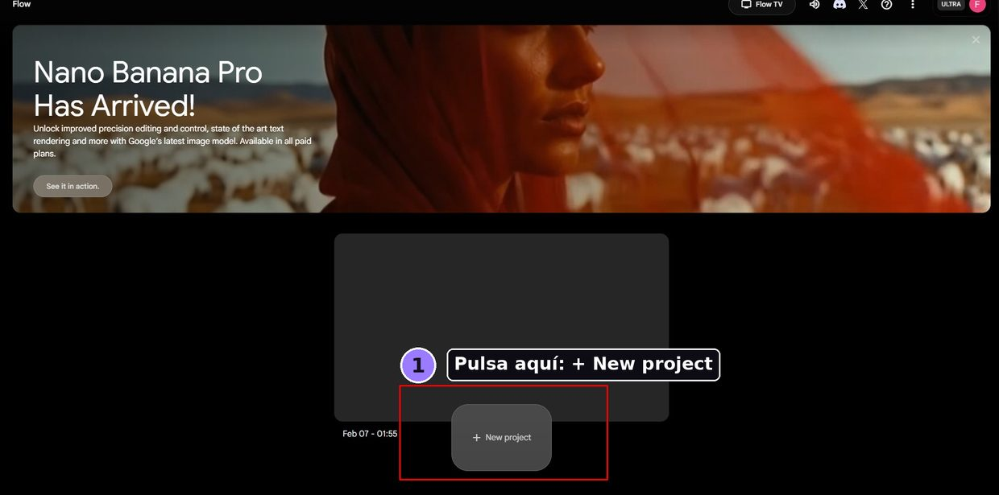
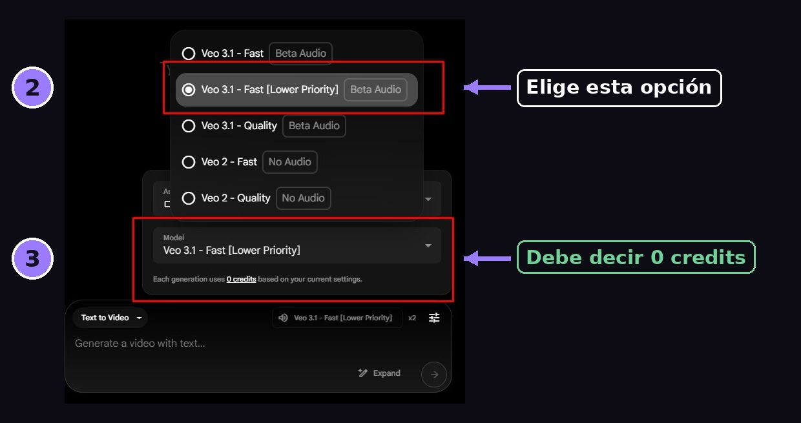

Son 3 pasos. Lo importante es elegir el modelo correcto: asi el video no gasta los creditos de la cuenta y todos podemos seguir generando.
Entra a Flow y pulsa + New project.

Arriba del cuadro de texto abre el selector de modelo y marca Veo 3.1 - Fast [Lower Priority]. Debajo tiene que decir 0 credits.

Veo 3.1 - Quality, Veo 3.1 - Fast (sin Lower Priority) y Veo 2 si gastan creditos. Cuando se acaban, nadie del equipo puede generar videos hasta la siguiente recarga.
Antes de darle a generar, mira la linea de abajo del selector: si dice Each generation uses 0 credits, puedes generar tranquilo.
Escribe lo que quieres en el cuadro Generate a video with text... y dale a la flecha. Con Lower Priority el video puede tardar un poco mas, pero sale igual de bien y no cuesta creditos.